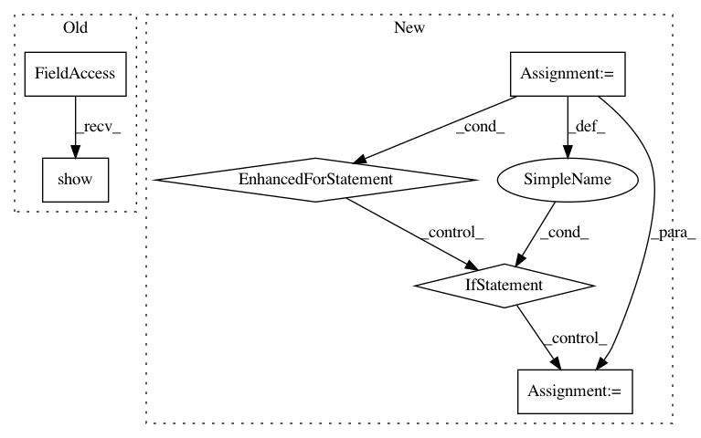

b7990885d8b26b9404fd9ce952b0b2f005019594,california_housing/feature_engineering.py,,,#,23
Before Change
s=train_set["population"]/100, label="population", figsize=(10,7),
c="median_house_value", cmap=plt.get_cmap("jet"), colorbar=True)
plt.legend()
plt.show()
attributes = ["median_house_value", "median_income", "total_rooms", "housing_median_age"]
scatter_matrix(housing[attributes], figsize=(12,8))
After Change
city_coords = {}
for dat in city_lat_long.iterrows():
row = dat[1]
if row["Name"] not in city_pop_data["City"].values:
continue
else:
city_coords[row["Name"]] = (float(row["Latitude"]), float(row["Longitude"]))
//clean pop
//fill in the missing 1980s values with avg rate of change
//make a dictonary of cities lat/long pass in a tuple of lat/longs
//for a given point and do the comparison
//two functions
/Ǘ. take two lat long tuples as input
//return the distance between the two
//vincenty(tuple1, tuple2)
//example below
newport_ri = (41.49008, -71.312796)
cleveland_oh = (41.499498, -81.695391)
x = vincenty(newport_ri, cleveland_oh)
x //distance stored in km, see units on printing
In pattern: SUPERPATTERN
Frequency: 3
Non-data size: 6
Instances
Project Name: CNuge/kaggle-code
Commit Name: b7990885d8b26b9404fd9ce952b0b2f005019594
Time: 2018-01-12
Author: nugentc@uoguelph.ca
File Name: california_housing/feature_engineering.py
Class Name:
Method Name:
Project Name: ilastik/ilastik
Commit Name: db00d263dd7b3079d9fe42af721828cce7fc0f24
Time: 2018-12-20
Author: hiltpa@gmail.com
File Name: ilastik/applets/pixelClassification/pixelClassificationGui.py
Class Name: PixelClassificationGui
Method Name: setupLayers
Project Name: ilastik/ilastik
Commit Name: db00d263dd7b3079d9fe42af721828cce7fc0f24
Time: 2018-12-20
Author: hiltpa@gmail.com
File Name: ilastik/applets/objectClassification/objectClassificationGui.py
Class Name: ObjectClassificationGui
Method Name: setupLayers